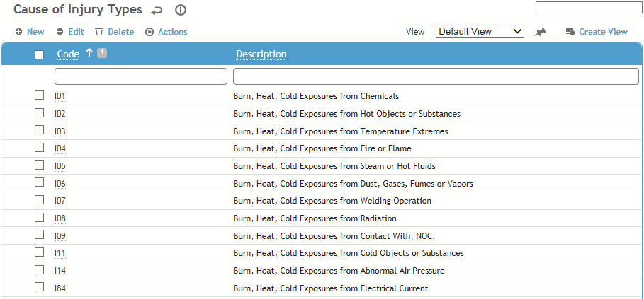
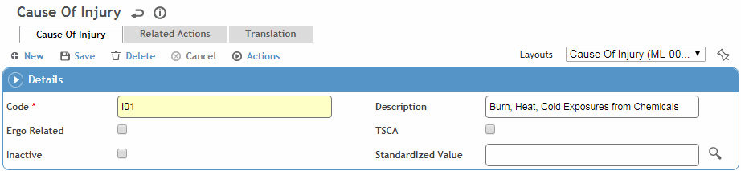

This table is used in reporting work-related (OSHA, US only) injuries and Root Cause analysis.
To filter the list of records, enter a few characters in one or more of the fields at the top followed by an asterisk, then press enter.

Click a link to edit, or click New.

Enter a Code and Description.
Indicate if this code is Ergo Related. This will populate an Ergonomic checkbox in the Clinic Visit record.
Indicate if this code is Toxic Substances Control Act-related (TSCA). When this code is selected a message will appear reminding the user to check the SDS sheet and consider creating a TSCA Questionnaire.
Optionally, select the Standardized Value (from the CauseofInjuryStandardizedValue look-up table) to categorize each record. This value will be used by the predictive Analytics module to compare your data to that of other organizations and determine your relative performance.
To assign actions to this cause of injury, click New on the Preventive Actions tab and choose an action (from the PreventiveAction table). When this cause of injury is selected, the related actions are added to the Actions tab.
Click Save.